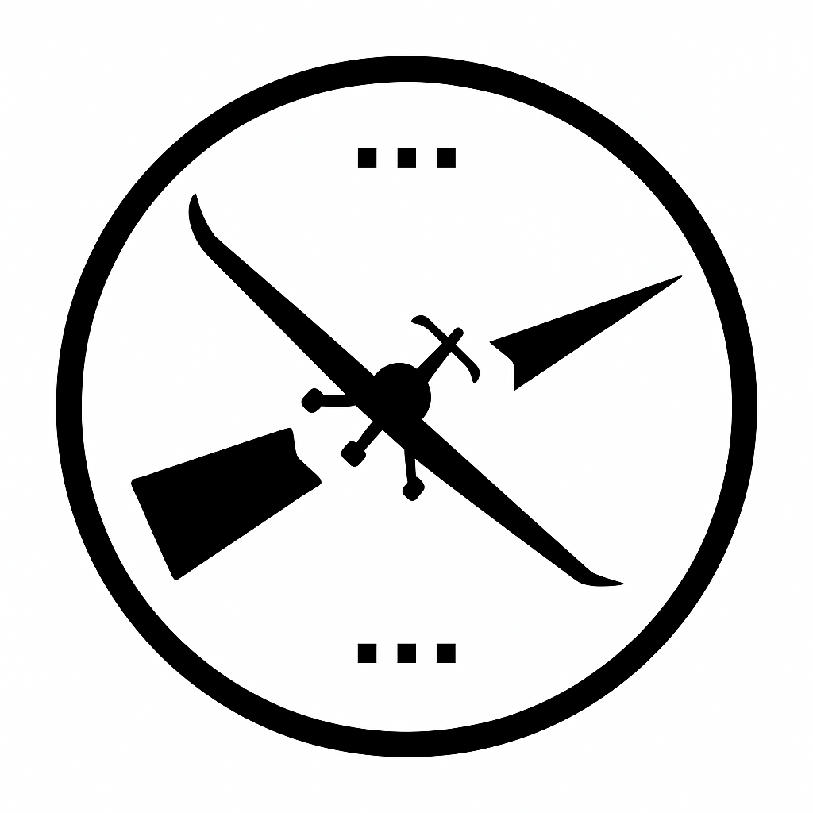

Plan de VolSaisissez vos points de report : cap au vent, vitesse sol, temps de branche, heures estimées, carburant et masse au décollage se calculent tout seuls. Le PDF sort en quinconce comme un vrai log de nav, avec les cases ATIS et heures réelles laissées vierges.
Vent et déclinaison saisis une fois : route magnétique, cap corrigé, dérive et vitesse sol calculés sur chaque branche.
Temps de branche, cumuls, heures estimées à chaque point, durée totale réserves comprises : plus rien à additionner à la main.
AVGAS, UL91, Jet A-1, MOGAS… la masse volumique convertit les litres en kilos et contrôle la MTOW.
Mise en page en quinconce, cases ATIS, heures moteur et notes volontairement vierges pour être remplies en vol.